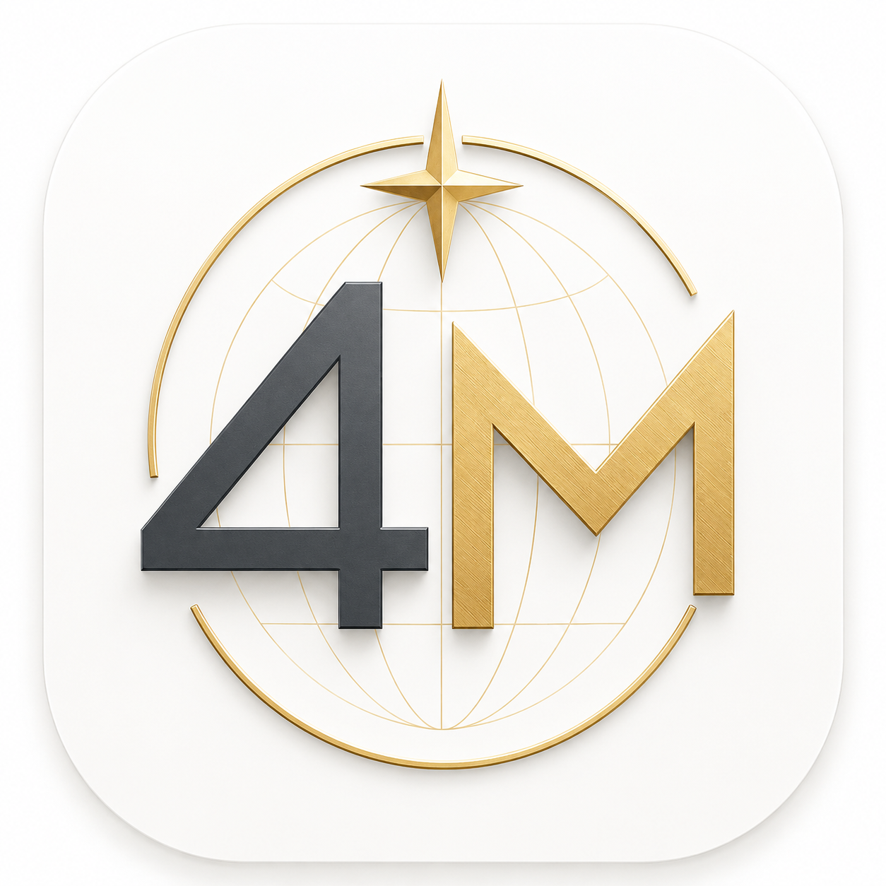

Fourth Meridian
Design Language v1
The canonical visual and motion system for Fourth Meridian. Every color, type size, material, radius, spacing value, and animation curve a future page should use lives here. This document is the source of truth — not a page redesign.
Brand foundation
Fourth Meridian's mark is a globe crossed by meridian lines, fixed by a north star, rendered in brass and ink. Every design decision below — the deep navy surfaces, the brass accent, the precision of the grid — extends that mark rather than decorating around it.

fourth-meridian-product-language.md.Color system
Six ramps. Atlas Ink is the neutral spine; Brass is the brand accent lifted directly from the mark; Meridian is the primary interactive color. Click any swatch to copy its hex value. Dark is the default surface — Paper is the light-mode base.
Semantic colors
Five meanings, fixed mappings. Color is always paired with an icon and a sign or label — never the only signal, for accessibility and for clarity at a glance.
Typography scale
SF Pro on Apple platforms, falling back to Inter / system-ui everywhere else. Financial figures always use tabular numerals so columns of numbers align — non-negotiable for a Bloomberg-density table.
| Checking | 1,204.30 |
| Brokerage | 82,910.00 |
| Mortgage | −312,004.18 |
Elevation
On near-black surfaces, drop shadow alone barely reads. Elevation here is communicated by border luminance and inner highlight as much as by shadow depth — five levels, lowest to highest.
Glass material system — "Atlas Glass"
Four blur weights, each with a specular top edge to simulate light catching a glass plane (iOS 26/27 liquid-glass inspired). Tint variants wash a 12–18% hue over the base material for status or premium surfaces.
Border radius
A six-step scale. Radius nests concentrically — a child's radius equals its parent's radius minus its own padding, the same logic Apple uses for squircle continuity.
Spacing system
4px base unit, 8pt rhythm. Two density modes: Comfortable for everyday screens, Compact for Bloomberg-density tables and power-user views.
Animation system — "Meridian Motion"
Calm and physical, never bouncy. Transitions animate transform and opacity only. Numbers roll rather than snap. Hover the card and watch the digits below to see both principles live.
E1 → E3, 240ms standard
prefers-reduced-motion: ambient loops stop, durations collapse to a single 1-frame opacity cross-fade.Iconography rules
Line icons only, 1.5px stroke on a 24px grid, rounded joins and caps — SF Symbols-like. Filled icons are reserved for status dots and the brand mark. Semantic icons always inherit their semantic color.
Chart colors
A fixed eight-color categorical order — the same series always gets the same color across every view. Sequential and diverging ramps for heatmaps and density views. Red and green are reserved for real gain/loss, never for arbitrary categories.
Accessibility requirements
Contrast ratios below are computed with the WCAG relative-luminance formula against this exact palette — not estimated.
| Foreground | Background | Ratio | WCAG AA |
|---|---|---|---|
| Ink-50 text | Ink-900 (dark base) | 17.6 : 1 | Pass — normal text |
| Ink-300 muted | Ink-900 (dark base) | 7.6 : 1 | Pass — normal text |
| Meridian-400 text | Ink-900 | 6.4 : 1 | Pass — normal text |
| Emerald-400 text | Ink-900 | 9.8 : 1 | Pass — normal text |
| Coral-400 text | Ink-900 | 6.7 : 1 | Pass — normal text |
| Brass-400 text | Ink-900 | 8.6 : 1 | Pass — normal text |
| White label | Meridian-600 button | 5.2 : 1 | Pass — button label |
| White label | Emerald-700 button | 5.0 : 1 | Pass — button label |
| White label | Coral-600 button | 4.9 : 1 | Pass — button label |
| Ink text | Brass-500 button (gold uses dark text, not white) | 7.5 : 1 | Pass — button label |
| Ink-900 text | Paper-0 (light base) | 17.5 : 1 | Pass — normal text |
| Meridian-600 link | Paper-0 (light base) | 5.0 : 1 | Pass — normal text |